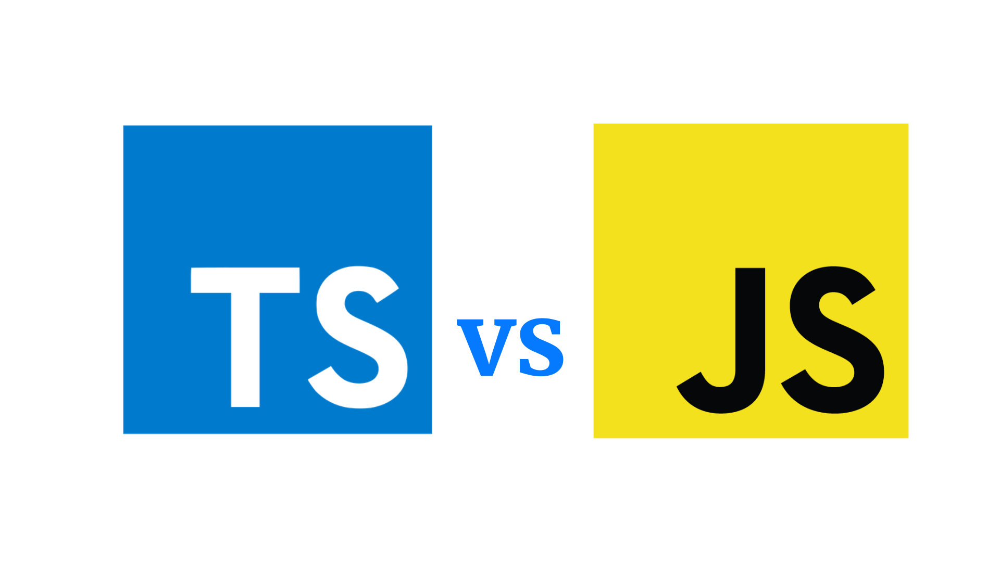

Elas são a base para construção de sites web. HTML é uma linguagem de marcação que é o primeiro passo na construção, CSS é onde estiliza as páginas, Javascript é a interação entre módulos.
TypeScript é uma linguagem de programação de código aberto desenvolvida pela Microsoft. É um superconjunto sintático estrito de JavaScript e adiciona tipagem estática opcional à linguagem.

Muitas pessoas acreditam que o TypeScript vai substituir JavaScript, na verdade ele é uma evolução e adição de recursos que o JS não tem.